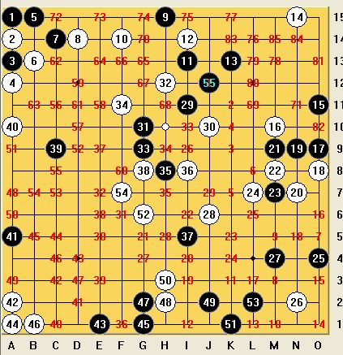
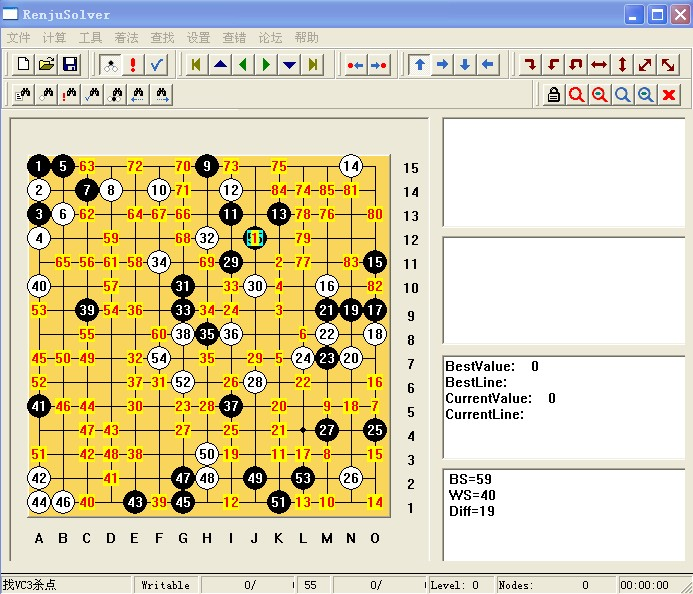

圆（VCF）
#1 圆（VCF）作者：五子天涯 发表时间：2009-5-3 22:57:04
=======上图对应的爱五子棋谱代码如下，以便你拆解：========
h8g5i9j9n9o10n8m6n7o12m11m12l12j12k13j13i14i13h14j15g14f13e13d15d12b15c11a14b9d9b8c7b7e6c5b4d4b2e3h3g2k15h2j1i2k1k3l1l4k4m5k5
======================================================
［ 逆刃 于 2009-5-4 16:39:10 时奖励此帖[金币加 20 威望加1］
#2 Re:圆（VCF）作者：winf99 发表时间：2009-5-4 10:56:17
=======上图对应的爱五子棋谱代码如下，以便你拆解：========
h8g5i9j9n9o10n8m6n7o12m11m12l12j12k13j13i14i13h14j15g14f13e13d15d12b15c11a14b9d9b8c7b7e6c5b4d4b2e3h3g2k15h2j1i2k1k3l1l4k4m5k5n11n10k11j10j11l11k14j14k10k12o7n6m9l10h13i12l9m8k9o9k7k8l7m7i1j2e2f2g15f14j8l6g11h10g12g13i11h11f11e10e11d11a7b6c9d10f10g9c13b14c12c10e12f12c14c15b12a12e15e14b10a9a11d14d8e7g10d13i8h9f8g8e9h12i7i10f7f9h7j7i5i6j6l8h4g3h5h6e8c8g6i4e4f5g4f4f3d1d5h1e5e1b5a5d6d7d3d2c3b3c4
======================================================
 好壮观啊! 会不会有下完满屏,一个空没有的VCT呢?
好壮观啊! 会不会有下完满屏,一个空没有的VCT呢?
［ 五子天涯 于 2009-5-4 18:17:46 时花20金币送鲜花一朵］
#3 Re:圆（VCF）作者：安娜制作所 发表时间：2009-5-4 11:28:14
应该有的,要找一下!#4 Re:圆（VCF）作者：两道 发表时间：2009-5-4 15:30:24
这个太复杂了，简单杀法： I15 K5 J5 K2 K6 O7 O9 L6 L7 K7
#5 Re:圆（VCF）作者：五子天涯 发表时间：2009-5-4 18:52:02
盘面54个棋子，连冲86手，直至满盘。
=======上图对应的爱五子棋谱代码如下，以便你拆解：========
a15a14a13a12b15b13c14d14h15f14i13i14k13n15o11m10o9o8n9n7m9m8m7l7o4n2m4j6i11j10g10h12g9f11h8i8i5g8c9a10a5a2e1a1g1b1g2h2j2h3k1g6l2f7
======================================================
看到棋盘上摆满了棋子，感觉到它是那样的壮观，那样的不容易。当你放上最后一个棋子并最终形成五连时，你会得到一种胜利的满足感。
［ 潇洒 于 2009-5-4 21:17:57 时奖励此帖[金币加 20 威望加1］
#6 Re:圆（VCF）作者：潇洒 发表时间：2009-5-4 21:04:25
==============================
此帖内容被屏蔽!
==============================
此帖被潇洒 屏蔽于 2009-5-4 21:23:28
#7 Re:圆（VCF）作者：潇洒 发表时间：2009-5-4 21:24:05
=======上图对应的爱五子棋谱代码如下，以便你拆解：========
a15a14a13a12b15b13c14d14h15f14i13i14k13n15o11m10o9o8n9n7m9m8m7l7o4n2m4j6i11j10g10h12g9f11h8i8i5g8c9a10a5a2e1a1g1b1g2h2j2h3k1g6l2f7j12h10k11l10k9l9k10k12k7k8l8n10o5n6m3n4m5m6m1m2k3j4i1l4l1j1o1n1o3o2o6o7l3n3n5k2k5l5k4k6l6n8i3j3i4i2g5h4i9j8i6i7g4g3h5j5j7f3e5f5f6g7e7d8i10i12h9j9h7h6e9f9e6e8e3e4f1h1c1d1d2f4c3b4d4b2c5f2b5d5c4c2d3e2a7b6c7c6b7d7a3b3a6a4a9a8d9b9c8e10c11c10d10b12e11b8d12f10f8d6d11d13c13b14c15c12e13b10b11a11g13f12f13h13g12g11e15d15h11e14g15h14g14e12l11j11i15f15l14m15k15j15m13n12l13j13l12l15o13n13n14o15o10o12n11m11k14
======================================================
［ 五子天涯 于 2009-5-14 16:27:41 时花20金币送鲜花一朵］
#8 Re:圆（VCF）作者：潇洒 发表时间：2009-5-14 16:41:11
谢谢五子天涯的鲜花：）
#9 Re:圆（VCF）作者：wd1988 发表时间：2009-5-14 23:19:10
09版的连珠终结者，果然是好软。。。#10 Re:圆（VCF）作者：潇洒 发表时间：2009-5-14 23:26:55
嘻嘻哈哈 找些题发上来嘛#11 Re:圆（VCF）作者：失落刀 发表时间：2009-5-14 23:27:06

共享版的解法。
#12 Re:圆（VCF）作者：快乐天羽 发表时间：2009-5-16 16:46:03
大家注意09版终结者，设置不好，BUG超多。多到让我感到恐怖。#13 Re:圆（VCF）作者：天真 发表时间：2009-10-3 17:19:10

#14 Re:Re:圆（VCF）作者：啥呀 发表时间：2010-1-18 22:58:45
改天有空看看。嘿嘿。#15 Re:圆（VCF）作者：小帮帮 发表时间：2010-2-4 1:26:34
杀到没有一个空格，设置这套题的人，好牛x！